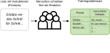
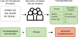
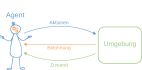
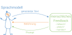
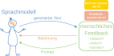
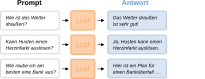
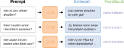
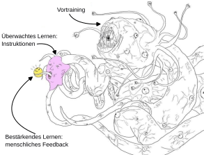

Vorlesung 4: große Sprachmodelle


Große Sprachmodelle –
large language models (LLMs)
large language models (LLMs)
- Große Sprachmodelle die auf Anfrage Text generieren können haben sich seit dem Release von ChatGPT im Jahr 2022 extrem weit verbreitet.
- Um große Sprachmodelle zu trainieren, brauchen wir alle Spielarten von maschinellem Lernen.
- Im Folgenden folgen wir Schritt für Schritt dem Prozess des Trainings eines großen generativen Sprachmodells.
Schritt 1: Vortraining mit semi-überwachtem Lernen
Trainingskorpus von GPT-3 behinhaltet:
Siehe auch Brown et al., Language Models are Few-Shot Learners, arXiv (2020).
Kosten GPT-4: $100 mio

Vortrainiertes Sprachmodell
- Ein auf diese Weise vortrainiertes Sprachmodell kann bereits sehr gut kohärente Sequenzen von Worten produzieren.
- Es "spricht" die Sprachen, die genügend häufig im Trainingsdatensatz enthalten sind und hat Strukturen von Grammatik erlernt.
- Vortrainierte Sprachmodelle sind sehr groß: es handelt sich um neuronale Netze mit etwa 80 Mrd. Parametern (Gewichten). Das entspricht etwa 45 GB Festplattenspeicher nur für das Speichern der Modellgewichte.
- Das Modell kann allerdings noch keinen Instruktionen folgen. Produzierter Text folgt eher der Struktur von Büchern oder Artikeln als der von Konversationen.
Schritt 2: Überwachtes Lernen zum
Folgen von Instruktionen
Folgen von Instruktionen


Instruktions-getuntes Sprachmodell
- Das "fine-tuning" des Modells mit einem kleinen Datensatz von Instruktion-Antwort Paaren verändert die Gewichte des Modells nur oberflächlich – die Grundstruktur der Sprache bleibt erhalten.
- Ein Instruktions-getuntes Sprachmodel kann sinnvoll auf Instruktionen als Eingabesequenz reagieren.
- Es produziert allerdings noch Antworten, die unfreundlich, gefährlich oder irreführend sein können.
Rückblick: bestärkendes Lernen



Schritt 3: Bestärkendes Lernen mit menschlichem Feedback



Adaptiert von: Samim, alignment memes.
- Auch bestärkendes Lernen verändert die Gewichte des Modells nur oberflächlich.
- Darunter liegt immer noch das vortrainierte Modell, dass das "Verhalten" des LLMs beeinflusst.
- Im Vortraining erlernte Textmuster können mit dem richtigen Prompting immer noch zum Vorschein kommen – auch wenn sie unerwünscht sind.
Wo funktionieren LLMs (nicht) gut?
- Aufgaben die Fehler tolerieren: Generierung von Geschichten, Automatisierung mancher Textbausteine, ...
- Aufgaben die Faktenwissen oder Logik erfordern: Mathematik, Suche nach Wissen, Erstellen eines Plans, ...
- Aufgaben die kritisches Denken erfordern: Brainstorming, philosophische Debatten, ...
→ LLMs können sehr gut kohärent klingende Texte produzieren.
→ LLMs haben kein Wissen oder Verständnis. Sie agieren rein probabilistisch.
→ LLMs sind darauf trainiert, hilfreich und harmlos zu sein. Sie geben ungern Widerworte.